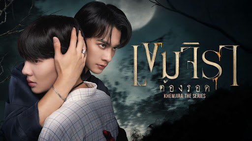
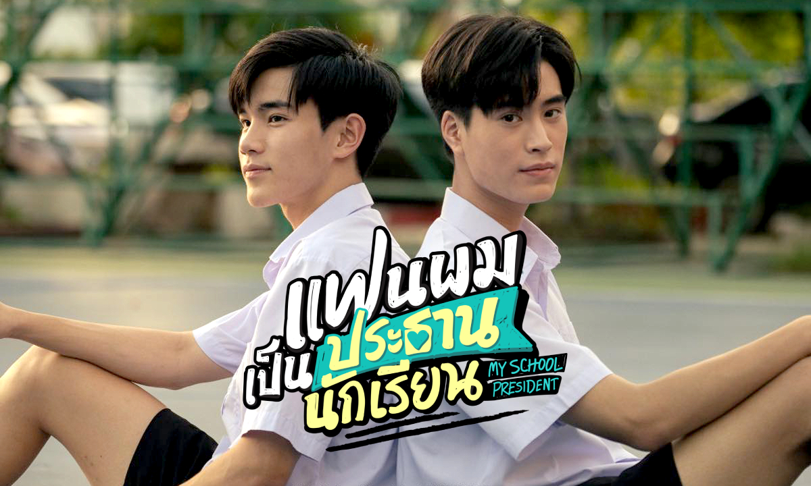

Why I Like Watching Series
Watching series is one of my favorite ways to relax and enjoy my free time. I like how series allow me to follow characters over a long period of time and understand their emotions and growth.
Series also help me escape from stress and feel connected to meaningful stories.
Why BL Series?
BL series focus strongly on relationships, emotions, and character development. I enjoy how these stories explore love, friendship, and personal growth in a sensitive and emotional way.
My Top 3 Favorite BL Series

Khemjira the series
Khemjira the series is a story that follows Khemjira, a character who faces difficult challenges and emotional struggles in life. The story explores themes of survival, inner strength, and personal growth as Khemjira learns how to face fear and pain. Through relationships and life experiences, the story shows how resilience and hope can help someone overcome even the hardest situations.
A Tale of THousand Stars
A Tale of Thousand Stars tells the story of a young man who travels to a remote village after receiving a life-changing heart transplant. While living there, he learns about the previous owner of the heart and becomes emotionally connected to a forest ranger working in the area. The series focuses on healing, self-discovery, and love that grows through understanding and shared experiences. It is a gentle and emotional story about second chances and meaningful connections.

My School President
My School President is a Thai BL series about the relationship between Tinn, the school president, and Gun, the leader of the school’s music club. Gun’s music club is at risk of being shut down because it does not meet the school’s rules, and Tinn, as the student council president, is responsible for enforcing those rules. However, Tinn secretly likes Gun and wants to help him keep the club alive. As they work together to save the music club, their relationship slowly grows from friendship into love. The series focuses on themes of youth, dreams, friendship, responsibility, and first love, showing how both characters learn to balance their duties with their feelings.
Where I Watch Series
I usually watch series on IQIYI, wetv, line tv or YouTube, where I can find subtitles and good video quality.